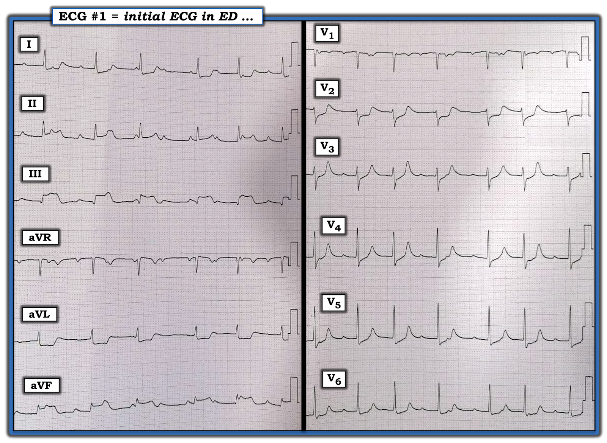
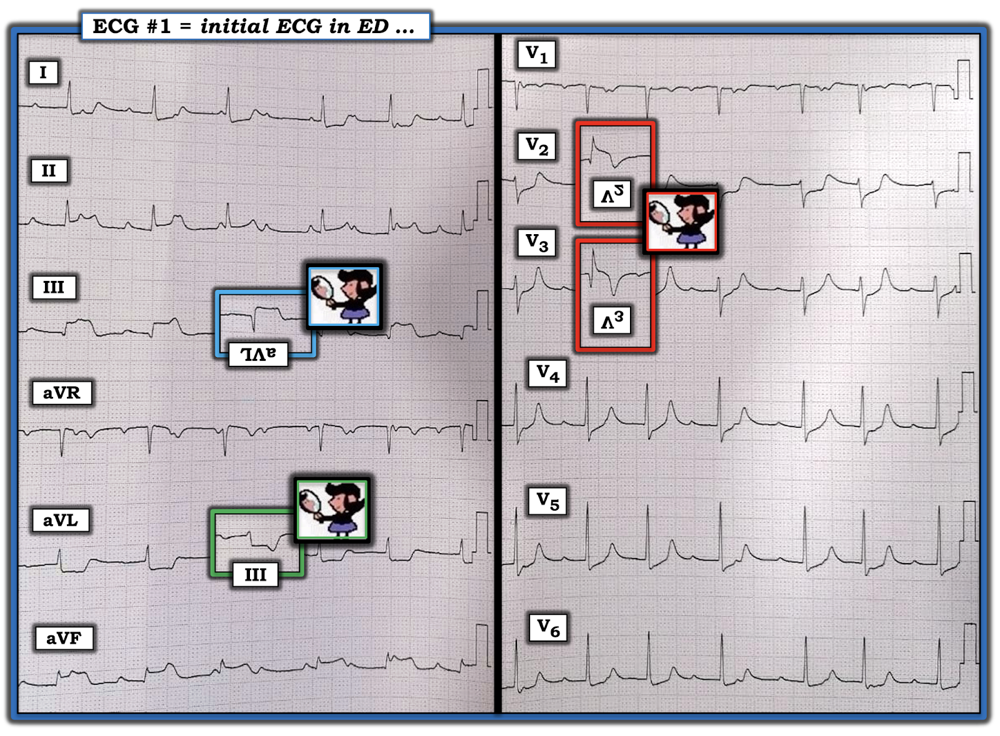
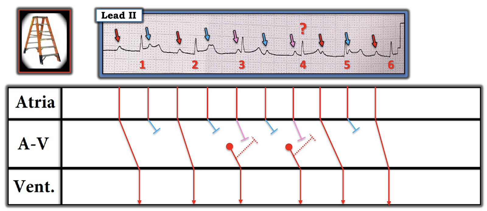
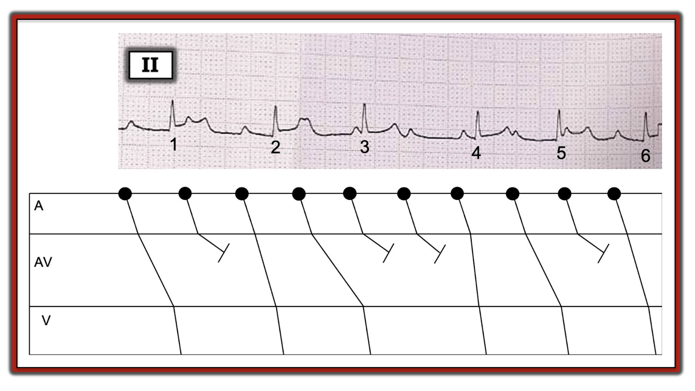
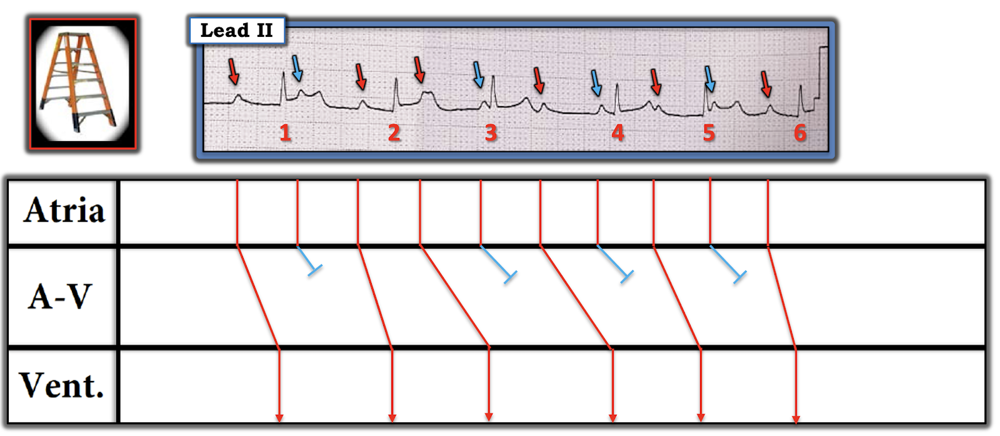
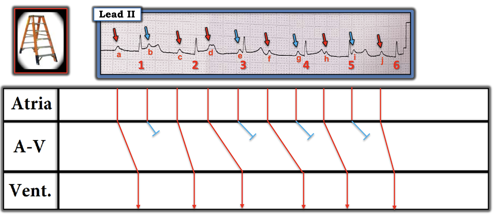

ECG Blog #187 (Thiếu máu cục bộ - Nhồi máu cơ tim - Blốc AV hoàn toàn - Wenckebach - Mobitz II - Phân ly nhĩ thất)
Bệnh nhân có điện tâm đồ trong Hình-1 là một người đàn ông ở độ tuổi 50, đến khoa cấp cứu vì đau ngực mới khởi phát.
- Đáng tiếc — không có dải nhịp chuyển đạo dài ... Các phức bộ trong bản ghi này cũng hơi bị méo do chụp ảnh điện tâm đồ ở một góc nghiêng. Dù vậy — chất lượng bản ghi vẫn đủ để đọc chính xác.
CÂU HỎI về điện tâm đồ #1:
- Bạn sẽ đọc điện tâm đồ trong Hình-1 NHƯ THẾ NÀO?
- Có động mạch “thủ phạm” có khả năng không?
- Có blốc AV không? NẾU có — Đây có phải là blốc AV hoàn toàn không?


SUY NGHĨ CỦA TÔI về điện tâm đồ #1:
Đây không phải bệnh nhân của tôi. Tôi nghĩ sẽ hữu ích nếu mô tả trình tự quá trình suy nghĩ của tôi khi đánh giá ca này dựa trên những thông tin tôi được cung cấp.
Như mọi khi — tôi thích bắt đầu bằng việc đọc nhịp tim trước tiên. Chỉ sau khi đã xem qua nhịp lần đầu — tôi mới xem phần còn lại của điện tâm đồ 12 chuyển đạo. Vấn đề với lần xem nhịp đầu tiên trong ca này — là không có dải nhịp chuyển đạo dài. Điều này buộc chúng ta chỉ xem được 12 chuyển đạo được trình bày, mà không chuyển đạo nào có quá 6 hoặc 7 nhát liên tiếp.
- CÁCH LÀM CỦA TÔI: Vì không có dải nhịp chuyển đạo dài — tôi tìm một chuyển đạo trong đó thấy rõ sóng P. Lý tưởng nhất là chuyển đạo II — vì sự hiện diện của sóng P dương với hình thái sóng P giống nhau ở chuyển đạo II sẽ xác định nhịp nền là nhịp xoang. Đôi khi, lúc sóng P không thấy rõ ở chuyển đạo II — tôi sẽ chọn một chuyển đạo khác thấy rõ sóng P.
- Với điện tâm đồ #1 — sóng P được thấy rõ (và dương) ở chuyển đạo II. Các sóng P này có vẻ khá đều — và điều này gợi ý rằng cơ chế của nhịp nền nhiều khả năng nhất là nhịp xoang. Tần số nhĩ tăng, khoảng ~130/phút.
- ĐIỂM THEN CHỐT (PEARL) #1: Đây là một rối loạn nhịp khó! MẤU CHỐT để xác định căn nguyên của rối loạn nhịp này — là xác định nhịp nhĩ (sóng P) có hay không đều (hoặc ít nhất là gần đều). Dùng COMPA ĐO (CALIPERS) giúp bạn làm việc này trong chưa đến 5 giây. Thực tế là — NẾU bạn không thường xuyên dùng compa đo khi đọc nhịp — thì bạn sẽ không bao giờ giỏi đọc các rối loạn nhịp phức tạp. Và, NẾU bạn chưa dùng compa đo — tôi cam đoan rằng kỹ năng đọc nhịp của bạn sẽ ngay lập tức tiến bộ từ khoảnh khắc bạn bắt đầu dùng.
ĐIỂM THEN CHỐT (PEARL) #2: Câu hỏi đầu tiên tôi đặt ra về nhịp trong bản ghi này — là liệu có một dạng blốc AV nào đó hay không? Đó là lý do việc xác định nhịp nhĩ có đều hay không lại quan trọng — vì blốc AV ít có khả năng xảy ra nếu sóng P không đều (hoặc ít nhất là gần đều).
- LƯU Ý: Trong blốc AV độ 2 và độ 3, thường có sự không đều nhẹ của khoảng P-P do có loạn nhịp xoang theo pha thất (ventriculophasic). Sự không đều nhẹ này được cho là do tưới máu vành thay đổi, gây ra bởi chính blốc AV (tức là, sóng P đi sát ngay sau phức bộ QRS có xu hướng xuất hiện sớm hơn một chút so với sóng P không “kẹp” một phức bộ QRS ở giữa — do nút SA được tưới máu tốt hơn). Nhưng mức dao động của khoảng P-P thường nhỏ, và ít hơn đáng kể so với mức thấy khi có PAC hoặc khoảng ngưng xoang ở bệnh nhân hội chứng suy nút xoang.
Tiếp tục đánh giá nhịp ban đầu của tôi:
- Theo Cách tiếp cận Ps, Qs & 3R (Xem Audio Pearl #3) — Phức bộ QRS hẹp ở mọi chuyển đạo trên điện tâm đồ #1 — vì vậy cơ chế của nhịp này là trên thất.
- Sóng P dương và khá đều ở chuyển đạo II.
- Khoảng R-R rõ ràng là không đều — nhưng tôi có ấn tượng rằng dường như có một kiểu “không đều có quy luật” (tức là, một dạng nhịp theo nhóm (group beating)) trong bản ghi này.
- Khi xem những chuyển đạo mà tôi có thể nhận ra rõ sóng P (tức là, chuyển đạo II; chuyển đạo V6, cùng một số chuyển đạo khác) — dường như ít nhất một số khoảng PR lặp lại! Sự lặp lại của một số khoảng PR này khó có thể là ngẫu nhiên — và gợi ý rằng có dẫn truyền của ít nhất một số sóng P!
- Dường như cũng có ít nhất một số sóng P xuất hiện đều đặn không được dẫn truyền (vì chúng không được theo sau ngay bởi phức bộ QRS nào).
- LƯU Ý: Nhờ dùng compa đo và nhờ tuân theo một cách tiếp cận hệ thống (tức là, tìm Ps, Qs & 3R) — tôi đã có thể đưa ra các nhận xét trên chỉ trong vài giây!
ĐIỂM THEN CHỐT (PEARL) #3: Dấu hiệu gợi ý nhịp theo nhóm cùng nhịp nhĩ khá đều và — việc ít nhất một số sóng P xuất hiện đều đặn không được dẫn truyền — cho chúng ta biết rằng một dạng blốc AV nào đó có khả năng hiện diện.
- Dù vậy, chúng ta đã có thể loại trừ blốc AV độ 3 (tức là, hoàn toàn) — vì nhịp thất rõ ràng là không đều và — sự lặp lại của một vài khoảng PR cho biết một số sóng P đang được dẫn truyền! (Nếu là blốc AV độ 3 thì sẽ không có sóng P nào được dẫn truyền cả).
ĐIỂM THEN CHỐT (PEARL) #4: Theo Phương pháp “KISS” (tức là, “Keep It Simple” Stupid — hãy giữ cho thật đơn giản) mà tôi dùng để đánh giá các blốc AV ... — NẾU có blốc AV — và nếu chúng ta biết nhịp này không phải blốc AV độ 1 đơn thuần (vì các khoảng PR trên điện tâm đồ #1 thay đổi) — và NẾU chúng ta đã loại trừ blốc AV độ 3 (như ở Pearl #3) — thì loại blốc AV này hẳn phải là một dạng blốc AV độ 2.
ĐIỂM THEN CHỐT (PEARL) #5: Như đã bàn trong Audio Pearl #4 (Xem ECG Blog #186) — Có 3 Loại cơ bản của Blốc AV độ 2: i) Blốc AV độ 2 Mobitz I ( = Wenckebach AV) (trong đó khoảng PR tăng dần cho đến khi một nhát bị rớt); ii) Blốc AV độ 2 Mobitz II (trong đó khoảng PR giữ không đổi cho đến khi một hoặc nhiều sóng P liên tiếp không được dẫn truyền); và, iii) Blốc AV độ 2 với dẫn truyền AV 2:1 (trong đó bạn không thể biết NẾU có cơ hội thì khoảng PR có tăng lên hay không — vì bạn không bao giờ thấy quá một sóng P được dẫn truyền liên tiếp do blốc 2:1).
- Nhịp trên điện tâm đồ #1 rõ ràng không phải là blốc AV 2:1 đơn thuần (vì nhịp thất không đều — và do đó không cho thấy dẫn truyền AV 2:1 chặt chẽ).
- Mobitz II là hiếm gặp! Theo kinh nghiệm của tôi — hơn 95% tất cả các blốc AV độ 2 mà tôi đã gặp trong hơn 40 năm tìm blốc AV, rốt cuộc đều là Mobitz I. Tầm quan trọng của việc nhận ra những ca Mobitz II hiếm hoi có xảy ra — là thường sẽ cần đặt máy tạo nhịp. Đó là do Mobitz II có xu hướng đáng lo ngại là đột ngột tiến triển thành một dạng blốc AV mức độ rất cao (tức là, nhiều sóng P liên tiếp không được dẫn truyền). Phức bộ QRS hầu như luôn rộng trong Mobitz II (vì dạng blốc AV nặng hơn này thường phát sinh ở vị trí thấp hơn trong hệ thống dẫn truyền) — và Mobitz II thường đi kèm nhồi máu cơ tim thành trước cấp (do tắc cấp động mạch LAD).
- Ngược lại, với Mobitz I — phức bộ QRS thường hẹp (trừ khi đã có sẵn blốc nhánh nền) — khoảng PR của nhát được dẫn truyền thứ 1 trong mỗi chu kỳ thường biểu hiện blốc AV độ 1 — và, vị trí nhồi máu cơ tim cấp thường là thành dưới (vì dạng blốc AV nói chung ít nặng hơn này có xu hướng phát sinh ở mức nút AV — vốn thường được cấp máu bởi RCA hoặc động mạch mũ trái).
ĐIỂM CỐT LÕI về những suy nghĩ của tôi cho đến lúc này: Tôi xin nhấn mạnh rằng vào thời điểm này tôi hoàn toàn không chắc chắn về nhịp trên điện tâm đồ #1. Dù vậy — tôi chắc chắn có nghi ngờ một dạng blốc AV độ 2 Mobitz I vì:
- Có nhịp xoang nền đều.
- Phức bộ QRS hẹp.
- Dường như có nhịp theo nhóm — với dẫn truyền của một vài nhát (thấy rõ nhất ở chuyển đạo V6) biểu hiện khoảng PR không đổi (và hơi kéo dài).
Ở bước này, dù chưa đưa ra được chẩn đoán xác định về nhịp — tôi chuyển sang đánh giá phần còn lại của Điện tâm đồ 12 chuyển đạo trong Hình-1. Trên thực tế — việc làm rõ thêm chẩn đoán nhịp vào lúc này sẽ không làm thay đổi xử trí ban đầu, và bệnh nhân này đã đến viện vì đau ngực mới khởi phát cần được đánh giá! Tiếp tục đánh giá phần còn lại của điện tâm đồ 12 chuyển đạo:
- Khoảng QTc trên điện tâm đồ #1 có vẻ ở mức giới hạn.
- Trục mặt phẳng trán có vẻ bình thường (khoảng +20 độ).
- Không có lớn buồng tim.
Về Thay đổi Q-R-S-T trên điện tâm đồ #1:
- Về sóng Q — Xét đến biên độ nhỏ của phức bộ QRS ở các chuyển đạo thành dưới, có một sóng Q lớn (và rộng) ở chuyển đạo III, và một sóng Q nhỏ hơn ở chuyển đạo aVF.
- Tăng tiến sóng R phù hợp — với vùng chuyển tiếp (nơi chiều cao sóng R trở nên lớn hơn độ sâu sóng S) xảy ra bình thường giữa chuyển đạo V3 đến V4.
Những dấu hiệu nổi bật nhất trên điện tâm đồ #1 liên quan đến Thay đổi sóng ST-T:
- Cả 3 chuyển đạo thành dưới đều có ST chênh lên đáng kể (nhất là khi xét đến biên độ nhỏ của phức bộ QRS ở chuyển đạo III và aVF). Ở cuối các đoạn ST chênh lên này là một sóng T dương biên độ nhỏ (tức là, tối cấp).
- Có ST chênh xuống soi gương (reciprocal) ở cả hai chuyển đạo bên cao (tức là, ở chuyển đạo I và aVL).
ĐIỂM THEN CHỐT (PEARL) #6: BẠN có nhận ra hình ảnh “kỳ diệu” = hình ảnh đối nghịch kiểu soi gương về HÌNH DẠNG của sóng ST-T ở chuyển đạo III và aVL mà tôi đã nhấn mạnh trước đây trong ECG Audio Pearl #2?
- Việc hình dạng của ST chênh lên ở chuyển đạo III trên điện tâm đồ #1 là “ảnh phản chiếu qua gương” của hình dạng sóng ST-T chênh xuống soi gương ở chuyển đạo aVL (trong hình chữ nhật XANH LÁ nhỏ ở Hình-2) — về cơ bản khẳng định STEMI thành dưới cấp hoặc mới xảy ra.
- Lưu ý rằng mối liên hệ “kỳ diệu” tương tự cũng tồn tại đối với hình dạng của ST chênh xuống ở chuyển đạo aVL — vốn là “ảnh phản chiếu qua gương” của hình dạng ST chênh lên ở chuyển đạo III (trong hình chữ nhật XANH DƯƠNG nhỏ ở Hình-2).


Ở các chuyển đạo ngực:
- Đoạn ST ở chuyển đạo V1 trên điện tâm đồ #1 dẹt (không chênh lên cũng không chênh xuống).
- Có điểm J chênh xuống ở cả 5 chuyển đạo ngực còn lại. Việc mức ST chênh xuống này lớn nhất ở chuyển đạo V2 (đi kèm nhồi máu cơ tim thành dưới cấp hoặc mới xảy ra) có giá trị chẩn đoán tổn thương thành sau cấp.
ĐIỂM THEN CHỐT (PEARL) #7: Dùng Nghiệm pháp soi gương (Mirror Test) giúp dễ hình dung các dấu hiệu điện tâm đồ của nhồi máu cơ tim thành sau cấp.
- Lật ngược một vài chuyển đạo thành trước sẽ cho hình ảnh điện tâm đồ của những gì đang diễn ra ở thành sau “đối xứng qua gương” — lúc này biểu hiện sóng Q sâu, ST chênh lên và sóng T đảo ngược sâu, gợi ý nhồi máu cơ tim thành sau cấp (trong các hình chữ nhật ĐỎ ở Hình-2).
ĐIỂM THEN CHỐT (PEARL) #8: Bình thường khi có nhồi máu cơ tim thành sau cấp — mỗi chuyển đạo thành trước (tức là, chuyển đạo V1, V2, V3 và thường cả V4) sẽ có ít nhất một mức ST chênh xuống nào đó. Việc đoạn ST ở chuyển đạo V1 dẹt (thay vì chênh xuống) gợi ý rằng ngoài nhồi máu cơ tim thành dưới-sau cấp — có lẽ còn có tổn thương RV (thất phải) cấp (tức là, nhồi máu thất phải cấp thường gây ST chênh lên ở chuyển đạo V1 (vốn nằm bên phải) — điều này có thể bị giảm bớt hoặc triệt tiêu bởi ST chênh xuống đồng thời do nhồi máu thành sau đang diễn ra).
- Cần các chuyển đạo ngực bên phải để chứng minh có tổn thương RV cấp trên điện tâm đồ #1 — nhưng NẾU có nhồi máu RV cấp, điều này sẽ khẳng định RCA (Right Coronary Artery — động mạch vành phải) là động mạch “thủ phạm” — vì động mạch vành LCx (Left Circumflex — mũ trái) không cấp máu cho thất phải.
- LƯU Ý: Để biết thêm về chẩn đoán điện tâm đồ của nhồi máu RV cấp — Mời xem ECG Blog #190.
ĐIỂM THEN CHỐT (PEARL) #9: Tắc động mạch vành cấp thường biểu hiện bằng ST chênh lên ở vùng các chuyển đạo bị ảnh hưởng — và ST chênh xuống soi gương ở vùng các chuyển đạo đối diện. Tái tưới máu động mạch bị tắc cấp (hoặc sau điều trị tiêu sợi huyết hay nong mạch vành — hoặc xảy ra tự phát) — thường được báo hiệu bằng sóng T đảo ngược ở các chuyển đạo lúc đầu có ST chênh lên.
- Ảnh soi gương của sóng T đảo ngược ở các chuyển đạo thành sau (trong các hình chữ nhật ĐỎ ở Hình-2) — là sự xuất hiện sóng T nhọn. Việc sóng T có vẻ nhọn và dương hơn mức dự kiến ở cuối đoạn ST chênh xuống rõ rệt thấy ở chuyển đạo V2 và V3 (cũng như ở các chuyển đạo ngực khác) — gợi ý rằng có thể đã có một phần tái tưới máu tự phát trên điện tâm đồ #1.
SUY NGHĨ CUỐI CÙNG về nhịp: Giờ đây khi đã đánh giá phần còn lại của điện tâm đồ 12 chuyển đạo (và giờ đây khi đã chẩn đoán nhồi máu cơ tim thành dưới-sau cấp đang diễn ra, có khả năng tổn thương RV) — chúng ta có thể quay lại để xem kỹ hơn về nhịp. Cách tốt nhất để làm việc này là dùng giản đồ bậc thang (laddergram):
- Tôi đã nêu bật các đặc điểm của nhịp trên điện tâm đồ #1 gợi ý mạnh dạng Mobitz I ( = Wenckebach AV) của blốc AV độ 2. Các đặc điểm đó gồm — i) nhịp nhĩ đều; ii) nhịp theo nhóm; iii) phức bộ QRS hẹp — và, iv) bằng chứng có một phần dẫn truyền, thể hiện qua các khoảng PR giống nhau đứng trước một vài phức bộ QRS. Việc giờ đây chúng ta còn có v) STEMI thành dưới cấp (do tắc cấp RCA) — khiến gần như chắc chắn rằng một dạng Wenckebach AV nào đó đang chi phối nhịp thấy trên điện tâm đồ #1.
- Các dạng Mobitz I có thể gặp có thể rất phức tạp — và có thể liên quan đến blốc AV nhiều tầng — nhát thoát nút AV — và/hoặc dẫn truyền “ẩn” (có thể làm thay đổi tần số vốn có của ổ tạo nhịp thoát). Rõ ràng, độ ngắn của dải nhịp có được trên điện tâm đồ #1 (lại càng bị biến đổi thêm do giấy hơi bị nghiêng, vì thế bản ghi này hơi bị méo) khiến không thể chẩn đoán nhịp xác định nếu chỉ dựa vào đánh giá bản ghi này. Dù vậy — tôi đề xuất cơ chế mà tôi đã vẽ trong giản đồ bậc thang trình bày dưới đây ở Hình-3. Phần giải thích giản đồ bậc thang này nằm trong chú thích của Hình.
ĐIỀU CỐT LÕI Về Case Hôm Nay: Điều quan trọng là cần nhận ra rằng việc xác định chính xác nhịp trong Hình-3 là không thiết yếu cho việc ra quyết định lâm sàng ban đầu — vì nó sẽ không làm thay đổi xử trí ban đầu. Về mặt thực hành — mô tả các dấu hiệu dưới đây trên điện tâm đồ #1 là thừa đủ để ra quyết định ban đầu phù hợp:
- Có nhịp xoang với blốc AV độ 2 loại Mobitz I, kèm phân ly nhĩ thất từng lúc và thỉnh thoảng có nhát thoát bộ nối.
- OMI thành dưới-sau cấp hoặc ít nhất là mới xảy ra (nhồi máu cơ tim do tắc — Occlusion-based MI) — với khả năng cao có tổn thương thất phải (RV) cấp đi kèm (Cần các chuyển đạo ngực sau để xác nhận điều này).
- Một số thay đổi tiến triển — với sự hình thành sóng Q thành dưới (ở các chuyển đạo vẫn còn ST chênh lên) — và, gợi ý ít nhất đã có tái tưới máu mạch vành một phần, dựa vào sóng T nhọn cao hơn mong đợi ở các chuyển đạo ngực trước.
- Với bệnh cảnh lâm sàng (tức là một người đàn ông khoảng 50 tuổi bị đau ngực mới khởi phát) — thông tim khẩn rõ ràng là có chỉ định để xác định rõ hơn giải phẫu và tình trạng thông thương hiện tại của động mạch “thủ phạm” (tức là nhiều khả năng tái tưới máu cấp có thể mang lại lợi ích cho bệnh nhân này!).


Hình-3: Giản đồ bậc thang cho 6 nhát bóp mà chúng ta thấy ở chuyển đạo II của điện tâm đồ #1. Các mũi tên màu cho thấy tính đều của nhịp xoang nền. Phức bộ QRS hẹp và có hình dạng giống nhau ở cả 6 nhát.
- Khoảng PR trước nhát #3 rõ ràng là quá ngắn để dẫn truyền được. Điều này cho biết nhát #3 hẳn phải là một nhát thoát từ nút AV.
- Khoảng PR trước nhát #2 và 6 bằng nhau — gợi ý rằng cả hai nhát này đều được dẫn truyền từ các sóng P màu ĐỎ đứng trước chúng.
- Khoảng PR trước nhát #1 và 5 cũng bằng nhau, dù hơi dài hơn khoảng PR trước nhát #2 và 6. Điều này gợi ý rằng nhát #1 và 5 cũng đều được dẫn truyền từ các sóng P màu ĐỎ đứng trước chúng (dù với khoảng PR hơi dài hơn so với nhát #2 và 6).
- Các sóng P được đánh dấu bằng mũi tên màu XANH DƯƠNG rõ ràng là không được dẫn truyền. Tất cả chúng hoặc rơi vào trong thời kỳ trơ — hoặc, nằm riêng lẻ ở giữa một khoảng R-R, cách xa mọi phức bộ QRS lân cận.
- Tôi không chắc chắn về nguyên nhân của nhát #4 (dấu chấm hỏi màu đỏ). Mặc dù về lý thuyết sóng P màu HỒNG đứng trước nó có thể dẫn truyền — tôi nghi ngờ nhát #4 là một nhát thoát từ nút AV, vì khoảng PR của nó ngắn hơn rất nhiều so với khoảng PR của các nhát khác trên bản ghi này mà chúng ta biết là được dẫn truyền.
- Tôi chọn màu HỒNG cho các sóng P trong Hình-3 mà tôi nghi lẽ ra đã được dẫn truyền nếu không có dẫn truyền “ẩn” từ 2 nhát thoát nút AV.
- Một khả năng khác — Có thể là thay vì một nhát thoát nút AV thứ 2, sóng P màu XANH DƯƠNG nằm giữa khoảng R-R của nhát #3-đến-4 đã được dẫn truyền với một khoảng PR rất dài (điều này vẫn sẽ ngăn sóng P xoang kế tiếp dẫn truyền do dẫn truyền ẩn ngược dòng). Một giả thuyết khác (thậm chí còn ít khả năng hơn) — có thể là dẫn truyền luân phiên qua đường dẫn truyền kép trong nút AV với các mức độ blốc AV khác nhau.
- Kết luận: Mặc dù không thể chắc chắn về cơ chế chính xác của nhịp trong Hình-3 từ dải nhịp rất ngắn này — gần như chắc chắn là có một dạng nào đó của Wenckebach AV — vì chúng ta thấy các sóng P được dẫn truyền cùng với các nhát bị rớt (màu XANH DƯƠNG) — và, có gợi ý rằng ít nhất ở tầng dưới của nút AV, khoảng PR tăng dần, xen giữa là các nhát bị rớt.
-------------------------------------------------------------------------
LỜI CẢM ƠN:
- Tôi xin cảm ơn Antranik Ohanian (đến từ Lebanon) đã chia sẻ case và bản ghi này.
-------------------------------------------------------------------------
TÀI LIỆU BỔ SUNG:
- Để tìm hiểu thêm về Kiến thức cơ bản về blốc AV — Xem ECG Blog #186 —
- Xem ECG Blog #188 — để ôn lại CÁCH Đọc (và/hoặc Vẽ) một Giản đồ bậc thang.
- Để tìm hiểu thêm về cách dùng Nghiệm pháp soi gương (mirror test) giúp nhận ra nhồi máu cơ tim thành sau cấp — Xem ECG Blog #56 — và — Các bình luận của tôi ở cuối bài đăng ngày 21 tháng 9 năm 2020 và bài đăng ngày 16 tháng 2 năm 2019 trên ECG Blog của Dr. Smith.

PHẦN BỔ SUNG (24/1/2021):
Như thường gặp với các rối loạn nhịp phức tạp — có nhiều hơn một cách giải thích khả dĩ ... Thách thức với bản ghi hôm nay — là chúng ta chỉ có 6 nhát bóp, và bệnh nhân này "đã không đọc sách giáo khoa" trong thời gian ghi dải nhịp này (tức là các "quy luật" thông thường của blốc Wenckebach không được tuân thủ chặt chẽ ...).
- David Richley đưa ra cách giải thích khác sau đây so với giản đồ bậc thang tôi đề xuất ở trên (Hình-4):


Hình-4: Giản đồ bậc thang do David Richley đề xuất. Dave đưa ra giải thích như sau: "Đây không phải là blốc AV hoàn toàn (CHB) – mà là blốc Wenckebach AV. Tuy nhiên, tôi không đồng ý với giản đồ bậc thang ở Hình-3 của Ken về một vài chi tiết:
- Một dải nhịp dài lẽ ra sẽ hữu ích — nhưng ngay cả khi không có, tôi nghĩ chúng ta có thể tự tin rằng cả nhát #3 lẫn nhát #4 đều KHÔNG phải là nhát thoát. Thứ nhất, trước mỗi nhát là những khoảng RR rất khác nhau, trong khi khoảng thoát lẽ ra phải hằng định.
- Thứ hai, nếu nhát #3 là một nhát thoát — khoảng RR đứng trước nó là 0.7 giây sẽ tương đương với tần số ‘thoát’ 86 lần/phút, và trong trường hợp đó ta sẽ kỳ vọng thấy một nhịp bộ nối gia tốc kéo dài, có lẽ bị ngắt quãng bởi các nhát bắt được thỉnh thoảng xuất hiện.
- Thay vào đó, tôi nghĩ nhát #3 là một nhát xoang được dẫn truyền — nhưng sóng P gắn với nó lại là sóng P nằm trên sóng T của nhát #2.
- Vậy — Nhát #4 có phải là nhát thoát duy nhất không? Tôi nghĩ có thể là vậy, nhưng tôi ngờ rằng đó là một nhát dẫn truyền khác, chỉ có khoảng PR ngắn hơn các nhát dẫn truyền còn lại vì khoảng ngưng đứng trước nó tương đối dài. Đây sẽ là một ví dụ về tính tương hỗ RP/PR — khoảng RP càng dài thì khoảng PR theo sau càng ngắn.
- Hình-4 là giản đồ bậc thang tôi đã vẽ để minh họa điều tôi nghĩ đang xảy ra. Giả thuyết tôi vừa nêu đòi hỏi phải có 2 sóng P bị blốc liên tiếp — điều này chắc chắn là bất thường trong blốc Wenckebach AV, nhưng tôi nghĩ tôi đã từng thấy trước đây. Dĩ nhiên, có thể có những cách giải thích khác tốt hơn.
David Richley luôn khơi gợi thảo luận về các rối loạn nhịp phức tạp, thường theo cách khiến tôi phải "quay lại bàn vẽ". Marriott đã từng trình bày các case Wenckebach trong đó các sóng P liên tiếp không được dẫn truyền trong blốc Wenckebach — nên điều này quả thật (như Dave đặt giả thuyết) là có thể xảy ra! Dù vậy — tôi vẫn cho rằng ít khả năng một khoảng ngưng dù tương đối dài hơn như giữa nhát #3-4 lại cải thiện dẫn truyền đủ để nhát #4 được dẫn truyền với khoảng PR ngắn tới 0.13 giây, như giản đồ bậc thang của Dave gợi ý ( = ý kiến của tôi).
Vì vậy, tôi đề xuất thêm một giản đồ bậc thang cuối cùng ở Hình-5 — dù tôi hoàn toàn thừa nhận rằng cơ chế được đề xuất trong đó cũng có những điểm yếu.


ĐIỀU CỐT LÕI: Cần nhận ra rằng các rối loạn nhịp phức tạp không phải lúc nào cũng có một lời giải đơn giản duy nhất — đặc biệt khi thời gian theo dõi điện tâm đồ cực kỳ hạn chế (như trong case hôm nay). Dù vậy — điều chúng ta thực sự biết — là bệnh nhân này bị OMI thành dưới-sau cấp kèm một dạng blốc AV độ 2 nào đó, trong đó có cơ chế Wenckebach đang hoạt động.

PHẦN BỔ SUNG #2 (27/1/2021):
Tôi vừa nhận được tin nhắn sau đây từ Jerry Jones, MD, FACEP, FAAEM về bản ghi thú vị này. Cũng như David Richley — Jerry là một đồng nghiệp đáng tin cậy khác của tôi, có chuyên môn tầm quốc tế và niềm đam mê với các rối loạn nhịp phức tạp. Jerry ủng hộ giản đồ bậc thang thứ 2 mà tôi đề xuất (xuất hiện ở Hình-5) — và anh ấy đã đánh nhãn 10 sóng P cho rõ ràng (Hình-6). Tôi bổ sung các nhận xét của anh ấy dưới dạng Phần bổ sung thứ 2 này:


Dr. Jerry Jones nhận định như sau (Hình-6):
- Sóng P “a” được dẫn truyền với khoảng PR kéo dài.
- Sóng P “b” không được dẫn truyền do còn trơ vì khoảng RP của nó quá ngắn.
- Sóng P “c” được dẫn truyền với khoảng PR kéo dài.
- Sóng P “d” được dẫn truyền với khoảng PR kéo dài vì khoảng RP của nó đủ dài để cho phép dẫn truyền và không có cách nào khác để giải thích sự hiện diện của sóng R #3. Một nhát bộ nối sớm về cơ bản sẽ là một kiểu “deus ex machina” (lời giải gượng ép từ trên trời rơi xuống).
- Sóng P “e” không được dẫn truyền vì khoảng PR quá ngắn.
- Sóng P “ f ” có thể đã hoặc không được dẫn truyền với khoảng PR kéo dài.
- Sóng P “g” không được dẫn truyền do dẫn truyền ẩn từ sóng P trước đó và do nhiều khả năng có blốc AV độ 1 đáng kể.
- Sóng P “h” được dẫn truyền với khoảng PR kéo dài.
- Sóng P “ i ” không được dẫn truyền do còn trơ vì khoảng RP của nó quá ngắn.
- Sóng P “ j ” được dẫn truyền với khoảng PR kéo dài.
Dr. Jones bổ sung thêm như sau:
- Dẫn truyền Wenckebach có thể hiện diện mà không gây ra nhát bị rớt. Tôi sẽ không bị ảnh hưởng bởi khoảng PR “bình thường” đứng trước sóng R #4.
- Chúng ta phải giả định rằng sóng P “ f ” được dẫn truyền vì chúng ta ĐÃ PHẢI giả định rằng sóng P “d” với khoảng RP ngắn hơn được dẫn truyền. Tôi không ủng hộ việc viện đến các nhát bộ nối lạc chỗ đột ngột để tìm lối thoát khi giải thích một rối loạn nhịp khó.
- Tôi không nghĩ sóng P “g” có thể được dẫn truyền vì: 1) tôi nghĩ có sẵn một blốc AV độ 1 đáng kể từ nền; và, 2) vì chúng ta phải giả định rằng sóng P “f” đã được dẫn truyền, nó sẽ blốc sóng P “g” do dẫn truyền ẩn. Điều đó KHÔNG loại trừ khả năng cả hai sóng P “f” và “g” đều không được dẫn truyền, dẫn đến một nhát thoát bộ nối (tức là nhát #4). Khoảng PR liên quan đến sóng P “f” có thể đơn giản là đã kéo dài quá lâu và bị một ổ thoát bộ nối chiếm quyền.
- Không có sóng P nào có khoảng RP ngắn hơn khoảng RP của sóng P “d” được dẫn truyền. Chắc chắn là — một dải nhịp thực sự đã có thể làm sáng tỏ mọi thứ rất nhiều.
- Sự hiện diện của khoảng PR kéo dài làm vấn đề phức tạp hơn một chút. Một số rối loạn nhịp khó nhất mà tôi từng gặp hóa ra chỉ có nền tảng là một blốc AV độ 1 mà thôi.
- Tôi dạy các lớp học của mình rằng có thể nhận ra blốc AV độ 3 vì nhịp thoát không bị ngắt quãng và đó là một nhịp rất đều (trừ khi bị ngắt bởi một PVC). Thực ra, điều đó không hoàn toàn đúng — ổ thoát có thể xuất hiện blốc đường ra Mobitz I hoặc II, và tạo ra một nhịp không đều, hay allorhythm (nhịp lặp theo mẫu). Điều đó rất hiếm (trừ khi bạn là một bác sĩ điện sinh lý). Dù vậy — tôi đã thử giải mã nhịp này như một nhịp bộ nối gia tốc có blốc đường ra, nhưng không thể đi đến một kết quả nào đáng tin.
- Tôi không nghĩ blốc AV nhiều tầng áp dụng được ở đây vì chúng ta đang ở nhịp xoang với tần số có vẻ ở khoảng 80 mấy lần/phút. Các khoảng P-P ngắn lại một chút ở cuối trong khi các khoảng R-R tăng nhẹ.
- Nếu có nhát nào là nhát thoát, thì đó phải là nhát #4, vì nó kết thúc khoảng R-R dài nhất.

ĐIỀU CỐT LÕI của tôi trong case hấp dẫn này Vẫn Như cũ: Cần nhận ra rằng các rối loạn nhịp phức tạp không phải lúc nào cũng có một lời giải đơn giản duy nhất — đặc biệt khi thời gian theo dõi điện tâm đồ cực kỳ hạn chế (như trong case hôm nay). Dù vậy — điều chúng ta thực sự biết — là bệnh nhân này bị OMI thành dưới-sau cấp kèm một dạng blốc AV độ 2 nào đó, trong đó có cơ chế Wenckebach đang hoạt động.